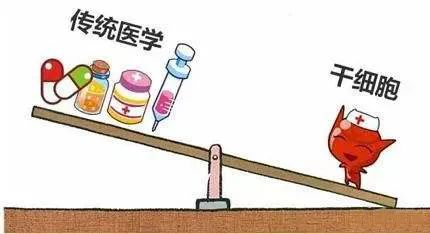
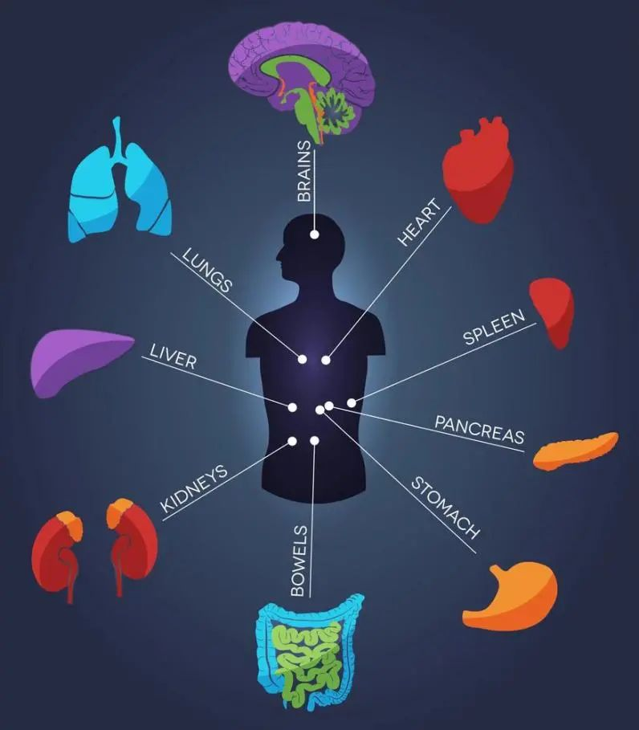

年后肝"负重"？百年春护肝美颜能量抗衰老针——给肝"松绑"，让脸发光！
2026-03-01
干细胞——身体留给我们最好的礼物
我们一生中，每一个人都有各自对医疗照护的不同需求。科学家和医生正持续研究，寻找更个人化的医疗方法，其中一种方法，就是研究干细胞。
干细胞是没有经过分化的细胞，也就是没有特殊功能的细胞。皮肤细胞可以保护身体，肌肉细胞可以收缩，神经细胞可以传递讯息；干细胞却没有任何特殊结构或功能，但干细胞有种潜力，就是变成人体中任何一种细胞。
事实上有很多种干细胞，都可以为科学家所用，应用在医疗或研究上。

健康，所有的细胞都以最佳状态运行的身体状态
我们眼里的疾病往往就是对各种病症进行分类，给予不同的名字。
血压高了，被告知得了高血压，医院开出利尿剂来降低血压；发现癌症了，被告知要切除、要化疗。
结果呢，病没好，大量的药物破坏了细胞生存的环境，伤害了细胞的健康，其他的各种疾病随着时间的推移，渐次出现。
因此，仅仅对病症进行分类管理和控制，是不会解决人的健康问题的。既然如此，唯一“治愈”的方法就是去恢复我们组织细胞的健康，排除它们的故障。
现代医学认为世界上有数千种疾病存在，且每种疾病都有不同的起因和疗法。身体各种机能的关联运转也必然导致疾病的相互关联。这种医学理念和人体自身的复杂性，导致我们的医学系统非常紊乱，医生们也只能靠套用条条框框来医治病症。由于这类治标不治根的医术，很多疾病变成慢性疾病。
20世纪最杰出的科学巨匠、生化学家罗杰·威廉姆斯博士指出：“一般来讲，身体的细胞会由于两种原因生病死亡：
其一，因为自身得不到所需要的东西；
其二，它们被自身不需要的东西所毒害了。
“健康就是没有疾病”，很多人会这么说。
那么什么是疾病呢，是那些被检查出来的特征吗？
如果医生没检查出什么问题，我们就应是一个健康的人。
但事实并不是这样的，当我们的健康因为某些细胞功能有问题而开始下降时，我们现代医学的仪器设备和检测手段是检测不出来的。
只有当机体中大量的细胞功能发生严重故障，细胞的自身修复与平衡能力已经无能为力时，那些疾病才能被戴上帽子。
可是，在这以前，难道我们是健康的吗？
不是。
那么到底什么是健康呢？
简言之，健康应该是所有的细胞都以最佳状态运行的身体状态。
窥探未来的方式有很多种，我们选择通过再生医学的眼睛
人工骨骼、人工关节、人工心脏瓣膜、人造血管……再生医学在医学领域的科研、转化与应用正在向纵深方向发展，不断造福患者。
再生医学是21世纪人类新型健康保健的先导，将可能治疗目前不能治疗的疾病，比如说糖尿病，脊髓损伤，心急梗死，肝衰，肾衰，骨关节炎，骨质疏松等导致的组织和器官的损坏都可能通过再生医学技术获得治愈。
未来，人类将可以通过干细胞培养出来移植所需的器官，而等待器官配型以及排斥反应等很可能致命的情况将不复存在；又或者，生物假肢将会被直接连接到神经系统上，从而提供与真实触感极其相似的感官。

而以上技术都离不开干细胞的支持，干细胞科学是目前世界生命科学中最前沿、最尖端的科学之一，干细胞诱导分化与大规模制备等理论和技术不断取得突破，个体化医疗临床应用呈加速趋势；同时，干细胞技术与生物医用材料不断发展，有望实现受损组织或器官的永久康复。
间充质干细胞，是目前最安全的临床用干细胞来源。间充质干细胞安全性最直接的证据来源于国内外广泛的临床医学研究。通过众多临床试验证明：间充质干细胞在应用过程中的安全性，不会导致致瘤等问题。
相信在不久的将来，干细胞能为我们做的事情越来越多，让我们面对那些生命不能承受之轻，不再逆来顺受，让生命变得更有质量!